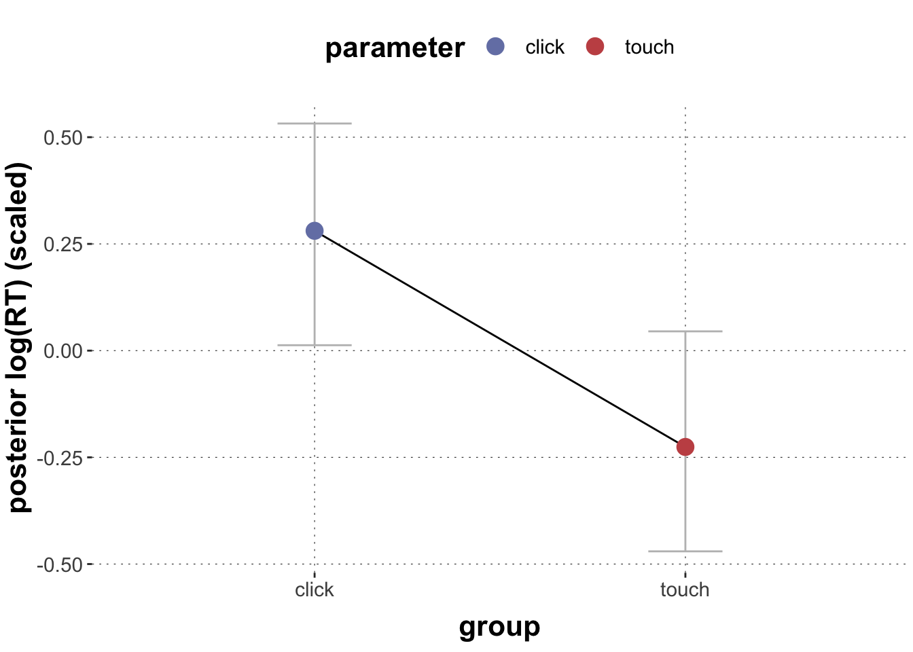
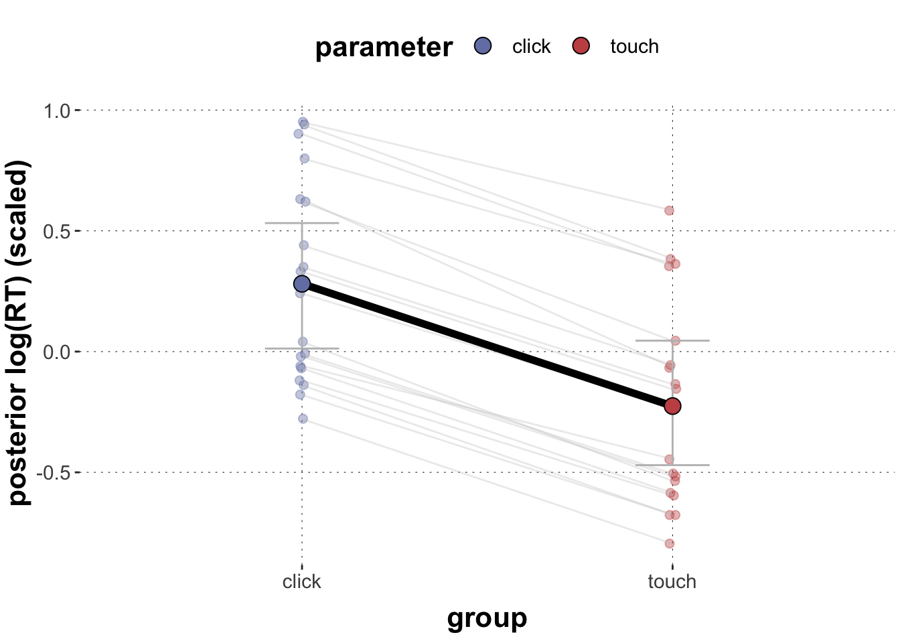
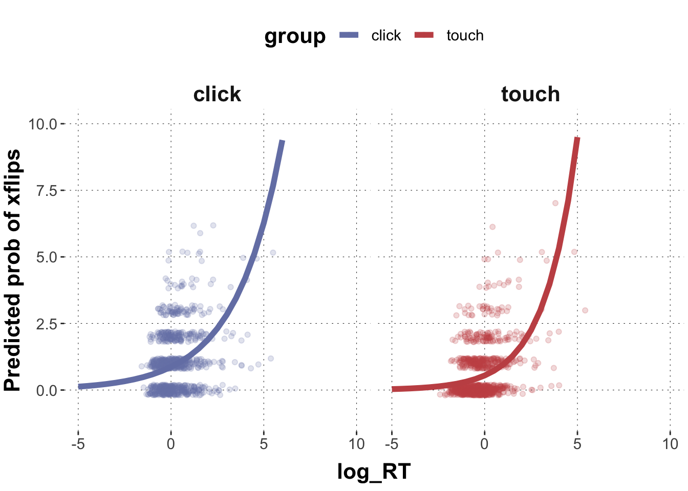

Here is code to load (and if necessary, install) required packages, and to set some global options (for plotting and efficient fitting of Bayesian models).
Toggle code
# install packages from CRAN (unless installed)pckgs_needed <-c("tidyverse","brms","rstan","rstanarm","remotes","tidybayes","bridgesampling","shinystan","mgcv")pckgs_installed <-installed.packages()[,"Package"]pckgs_2_install <- pckgs_needed[!(pckgs_needed %in% pckgs_installed)]if(length(pckgs_2_install)) {install.packages(pckgs_2_install)} # install additional packages from GitHub (unless installed)if (!"aida"%in% pckgs_installed) { remotes::install_github("michael-franke/aida-package")}if (!"faintr"%in% pckgs_installed) { remotes::install_github("michael-franke/faintr")}if (!"cspplot"%in% pckgs_installed) { remotes::install_github("CogSciPrag/cspplot")}# load the required packagesx <-lapply(pckgs_needed, library, character.only =TRUE)library(aida)library(faintr)library(cspplot)# these options help Stan run fasteroptions(mc.cores = parallel::detectCores())# use the CSP-theme for plottingtheme_set(theme_csp())# global color scheme from CSPproject_colors = cspplot::list_colors() |>pull(hex)# names(project_colors) <- cspplot::list_colors() |> pull(name)# setting theme colors globallyscale_colour_discrete <-function(...) {scale_colour_manual(..., values = project_colors)}scale_fill_discrete <-function(...) {scale_fill_manual(..., values = project_colors)}
Why is the random effect structure of this model questionable? Can we meaningfully estimate all parameters? (Hint: Think about what group levels vary across predictor levels)
Solution
Factor condition is not crossed with exemplar. An exemplar is either typical or atypical, thus a random slope does not make sense.
Exercise 1b
Use the following data frame:
Toggle code
# set up data framedolphin_correct <- dolphin %>%filter(correct ==1) %>%mutate(log_RT_s =my_scale(log(RT)),AUC_s =my_scale(AUC))
Run a multilevel model that predicts AUC_s based on condition. Specify maximal random effect structures for exemplars and subject_ids (ignore correlations between intercepts and slopes for now). Specify a seed = 98.
If you encounter “divergent transition” warning, make them go away by refitting the model appropriately (Hint: brms gives very useful, actionable advice)
(This might take a couple of minutes, get used to it ;)
You want to run a multilevel model that predicts log_RT_s based on group. You want to account for group-level variation of both subject_id and exemplar. What kind of groupings can be meaningfully estimated, given the dataset and the experimental design. You can check the crossing of different vectors with xtabs() for example.
Solution
Toggle code
# check crossingxtabs(~ group + subject_id, dolphin_correct)
# individual subject_ids contributed data only to one group because it is a between-subject design# --> we need varying intercepts only, i.e. a different base-rate for subjectsxtabs(~ group + exemplar, dolphin_correct)
# each exemplar contributes data to both groups# --> we can integrate varying intercepts and slopes for exemplars
Exercise 1d
Run a multilevel model that predicts log_RT_s based on group and add maximal random effect structures licensed by the experimental design (ignore possible random intercept-slope interactions for now).
Specify weakly informative priors as you see fit.
Solution
Toggle code
priors <-c(#priors for all fixed effects (group)set_prior("student_t(3, 0, 3)", class ="b"),#prior for the Interceptset_prior("student_t(3, 0, 3)", class ="Intercept"),#prior for all SDs including the varying intercepts and slopesset_prior("student_t(3, 0, 3)", class ="sd"))xmdl <-brm(log_RT_s ~ group + (1| subject_id) + (group || exemplar),prior = priors,data = dolphin_correct)xmdl
Family: gaussian
Links: mu = identity; sigma = identity
Formula: log_RT_s ~ group + (1 | subject_id) + (group || exemplar)
Data: dolphin_correct (Number of observations: 1915)
Draws: 4 chains, each with iter = 2000; warmup = 1000; thin = 1;
total post-warmup draws = 4000
Group-Level Effects:
~exemplar (Number of levels: 19)
Estimate Est.Error l-95% CI u-95% CI Rhat Bulk_ESS Tail_ESS
sd(Intercept) 0.46 0.08 0.33 0.66 1.00 768 1618
sd(grouptouch) 0.12 0.06 0.01 0.23 1.00 988 960
~subject_id (Number of levels: 108)
Estimate Est.Error l-95% CI u-95% CI Rhat Bulk_ESS Tail_ESS
sd(Intercept) 0.57 0.04 0.49 0.66 1.01 575 1211
Population-Level Effects:
Estimate Est.Error l-95% CI u-95% CI Rhat Bulk_ESS Tail_ESS
Intercept 0.28 0.13 0.02 0.54 1.01 412 512
grouptouch -0.51 0.12 -0.76 -0.28 1.01 337 416
Family Specific Parameters:
Estimate Est.Error l-95% CI u-95% CI Rhat Bulk_ESS Tail_ESS
sigma 0.68 0.01 0.66 0.71 1.00 4198 2748
Draws were sampled using sampling(NUTS). For each parameter, Bulk_ESS
and Tail_ESS are effective sample size measures, and Rhat is the potential
scale reduction factor on split chains (at convergence, Rhat = 1).
Exercise 1e
Extract the posterior means and 95% CrIs of touch vs. click log_RT_s and plot them.
Solution
Toggle code
# Extract the posteriorsposteriors <- xmdl %>%spread_draws(b_Intercept, b_grouptouch) %>%# calculate posteriors for each individual levelmutate(click = b_Intercept,touch = b_Intercept + b_grouptouch) %>%select(click, touch) %>%gather(key ="parameter", value ="posterior") %>%group_by(parameter) %>%summarise(mean_posterior =mean(posterior),`95lowerCrI`= HDInterval::hdi(posterior, credMass =0.95)[1],`95higherCrI`= HDInterval::hdi(posterior, credMass =0.95)[2])# plotggplot(data = posteriors, aes(x = parameter, y = mean_posterior,color = parameter, fill = parameter)) +geom_errorbar(aes(ymin =`95lowerCrI`, ymax =`95higherCrI`),width =0.2, color ="grey") +geom_line(aes(group =1), color ="black") +geom_point(size =4) +labs(x ="group",y ="posterior log(RT) (scaled)")

Exercise 1f
Add the posterior estimates for different exemplars to the plot. (Hint: Check code from the previous “tutorial” to extract the random effect estimates.)
Solution
Toggle code
# extract the random intercepts for exemplarsrandom_intc_matrix <-ranef(xmdl)$exemplar[, , "Intercept"] %>%round(digits =2) # extract the by-exemplar random slopes for grouprandom_slope_matrix <-ranef(xmdl)$exemplar[, , "grouptouch"] %>%round(digits =2)# random intercepts to dataframerandom_intc_df <-data.frame(exemplar =row.names(random_intc_matrix), random_intc_matrix) %>%select(exemplar, Estimate) %>%rename(rintercept = Estimate)# combine with random slope matrixrandom_slope_df <-data.frame(exemplar =row.names(random_slope_matrix), random_slope_matrix) %>%select(exemplar, Estimate) %>%rename(rslope = Estimate) %>%full_join(random_intc_df) %>%# add population parameters and group-specific parametersmutate(click_population =fixef(xmdl)[1],touch_population =fixef(xmdl)[1] +fixef(xmdl)[2],click = rintercept + click_population,touch = rintercept + rslope + touch_population) %>%select(exemplar, touch, click) %>%gather(parameter, mean_posterior, -exemplar)# combine with plotggplot(data = posteriors, aes(x = parameter, y = mean_posterior,color = parameter, fill = parameter)) +# add random estimatesgeom_point(data = random_slope_df, alpha =0.4,size =2,position =position_jitter(width =0.01) ) +# add lines between random estimatesgeom_line(data = random_slope_df, aes(group = exemplar),color ="grey", alpha =0.3) +# add population-level estimatesgeom_errorbar(aes(ymin =`95lowerCrI`, ymax =`95higherCrI`),width =0.2, color ="grey") +geom_line(aes(group =1), size =2, color ="black") +geom_point(size =4, pch =21, color ="black") +labs(x ="group",y ="posterior log(RT) (scaled)")

Exercise 2: Poisson regression
Exercise 2a
Run a multilevel poisson regression predicting xpos_flips based on group, log_RT_s, and their two-way interaction. Specify maximal random effect structures for exemplars and subject_ids licensed by the design (ignore correlations between intercepts and slopes for now). (Hint: allow groupings to differ regarding the interaction effect if licensed by the design.) Specify weakly informative priors.
Solution
Toggle code
priors <-c(#priors for all fixed effectsset_prior("student_t(3, 0, 3)", class ="b"),#prior for all SDs including the varying intercepts and slopes for both groupingsset_prior("student_t(3, 0, 3)", class ="sd"))poisson_mdl <-brm(xpos_flips ~ group * log_RT_s + (log_RT_s || subject_id) + (group * log_RT_s || exemplar),data = dolphin_correct,prior = priors,family ="poisson")poisson_mdl
Family: poisson
Links: mu = log
Formula: xpos_flips ~ group * log_RT_s + (log_RT_s || subject_id) + (group * log_RT_s || exemplar)
Data: dolphin_correct (Number of observations: 1915)
Draws: 4 chains, each with iter = 2000; warmup = 1000; thin = 1;
total post-warmup draws = 4000
Group-Level Effects:
~exemplar (Number of levels: 19)
Estimate Est.Error l-95% CI u-95% CI Rhat Bulk_ESS
sd(Intercept) 0.06 0.04 0.00 0.15 1.00 1322
sd(grouptouch) 0.11 0.07 0.00 0.26 1.00 1159
sd(log_RT_s) 0.04 0.03 0.00 0.12 1.00 1362
sd(grouptouch:log_RT_s) 0.09 0.06 0.00 0.23 1.00 1330
Tail_ESS
sd(Intercept) 1965
sd(grouptouch) 1408
sd(log_RT_s) 1793
sd(grouptouch:log_RT_s) 1878
~subject_id (Number of levels: 108)
Estimate Est.Error l-95% CI u-95% CI Rhat Bulk_ESS Tail_ESS
sd(Intercept) 0.59 0.06 0.49 0.72 1.00 987 2214
sd(log_RT_s) 0.13 0.05 0.03 0.23 1.00 793 1264
Population-Level Effects:
Estimate Est.Error l-95% CI u-95% CI Rhat Bulk_ESS Tail_ESS
Intercept -0.14 0.09 -0.33 0.04 1.00 1038 1845
grouptouch -0.47 0.13 -0.74 -0.21 1.00 1269 2091
log_RT_s 0.39 0.05 0.30 0.49 1.00 2090 2410
grouptouch:log_RT_s 0.17 0.07 0.03 0.32 1.00 2282 2197
Draws were sampled using sampling(NUTS). For each parameter, Bulk_ESS
and Tail_ESS are effective sample size measures, and Rhat is the potential
scale reduction factor on split chains (at convergence, Rhat = 1).
Exercise 2b
Extract and plot the population level estimates for both click and touch group as a regression line into a scatter plot (x = b_log_RT_s, y = xpos_flips).
Solution
Toggle code
# extract posterior means for model coefficientspredicted_Poisson_values <- poisson_mdl %>%spread_draws(b_Intercept, b_log_RT_s, b_grouptouch, `b_grouptouch:log_RT_s` ) %>%# make a list of relevant value range of logRTmutate(log_RT =list(seq(-5, 10, 0.5))) %>%unnest(log_RT) %>%mutate(click =exp(b_Intercept + b_log_RT_s*log_RT),touch =exp(b_Intercept + b_log_RT_s*log_RT + b_grouptouch +`b_grouptouch:log_RT_s`*log_RT)) %>%select(log_RT, click, touch) %>%gather(group, posterior, -log_RT) %>%group_by(log_RT, group) %>%summarise(pred_m =mean(posterior, na.rm =TRUE),pred_low =quantile(posterior, prob =0.025),pred_high =quantile(posterior, prob =0.975) ) # plot population levelggplot(data = predicted_Poisson_values, aes(x = log_RT, y = pred_m)) +geom_point(data = dolphin_correct, aes(x = log_RT_s, y = xpos_flips, color = group), position =position_jitter(height =0.2), alpha =0.2) +geom_line(aes(y = pred_m, color = group), size =2) +facet_grid(~group) +ylab("Predicted prob of xflips") +ylim(-1,10) +xlim(-5,10)

Exercise 2c
Extract the respective subject-specific estimates from the model and plot them into the same plot (use thinner lines).
Solution
Toggle code
# extract the random effects for subject_id# interceptsrandom_intc_matrix <-ranef(poisson_mdl)$subject_id[, , "Intercept"] %>%round(digits =3)# slopesrandom_slope_matrix <-ranef(poisson_mdl)$subject_id[, , "log_RT_s"] %>%round(digits =3)# to dfrandom_intc_df <-data.frame(subject_id =row.names(random_intc_matrix), random_intc_matrix) %>%select(subject_id, Estimate) %>%rename(rintercept = Estimate)# wrangle into one df random_slope_df <-data.frame(subject_id =row.names(random_slope_matrix), random_slope_matrix) %>%select(subject_id, Estimate) %>%rename(rslope = Estimate) %>%full_join(random_intc_df) %>%expand_grid(group =c("click", "touch")) %>%# add population parameters and group-specific parametersmutate(adjusted_int =ifelse(group =="click", rintercept +fixef(poisson_mdl)[1], rintercept +fixef(poisson_mdl)[1] +fixef(poisson_mdl)[2]),adjusted_slope =ifelse(group =="click", rslope +fixef(poisson_mdl)[3], rslope +fixef(poisson_mdl)[3] +fixef(poisson_mdl)[4])) %>%mutate(log_RT =list(seq(-5, 10, 0.5))) %>%unnest(log_RT) %>%select(subject_id, log_RT, group, adjusted_int, adjusted_slope) %>%group_by(subject_id, log_RT, group) %>%mutate(pred_m =exp(adjusted_int + adjusted_slope*log_RT))# plot the individual regression lines on top of the population estimateggplot(data = predicted_Poisson_values, aes(x = log_RT, y = pred_m)) +geom_point(data = dolphin_correct, aes(x = log_RT_s, y = xpos_flips), position =position_jitter(height =0.2), alpha =0.01) +geom_line(aes(y = pred_m, color = group), size =2) +geom_line(data = random_slope_df, aes(x = log_RT, y = pred_m, group = subject_id, color = group),size =0.5, alpha =0.2) +facet_grid(~group) +ylab("Predicted prob of xflips") +ylim(-1,10) +xlim(-5,10)